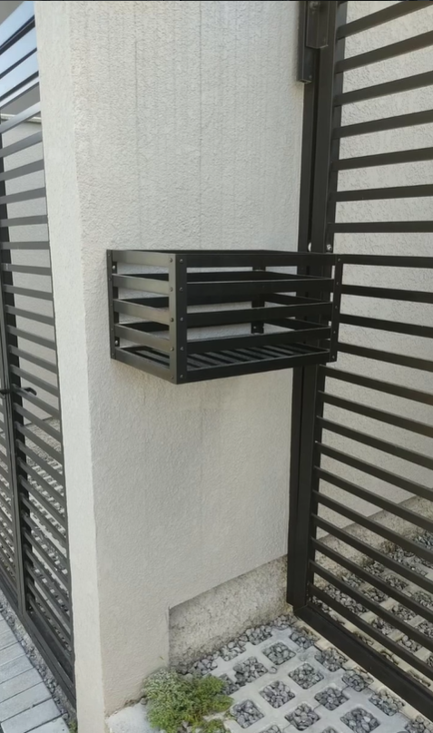
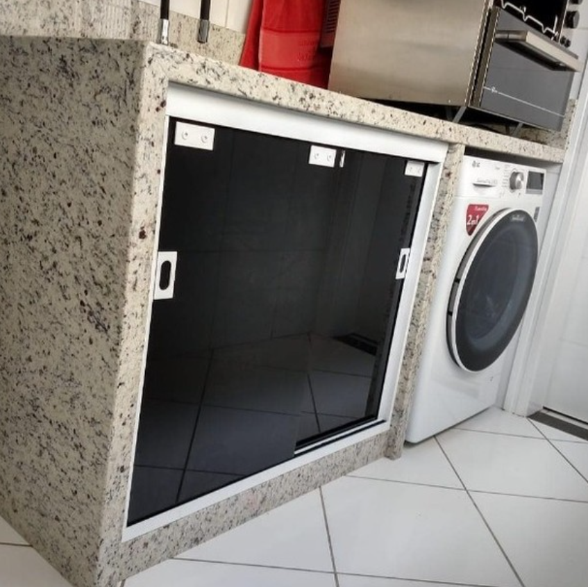

Confira as diferenças de Linhas de Esquadrias
Linha Suprema
Tem perfis de 25 mm e suporta vidros de 4 a 6 mm. É mais acessível e indicada para projetos menores, como janelas de banheiro, cozinha e lavanderia, e portas de giro de áreas molhadas.
Projetos Realizados

Lixeira de Alumínio
 Clarabóia
Clarabóia

Porta de Corrediça
 Portão Sob Medida
Portão Sob Medida
Contatos
📍 Endereço
Rua Exemplo, 123 – Centro
Sua Cidade – SC
🕒 Horário de Atendimento
Segunda a Sexta: 08h às 18h
Sábado e Domingo: Fechados
✉️ E-mail
mjsresquadrias@gmail.com.br